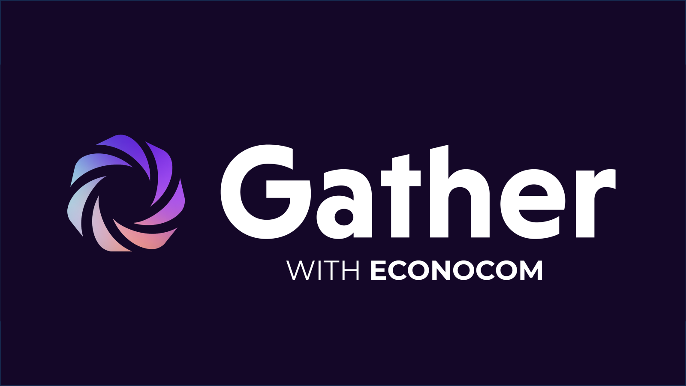
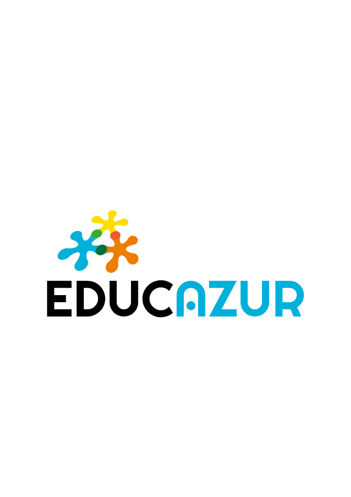
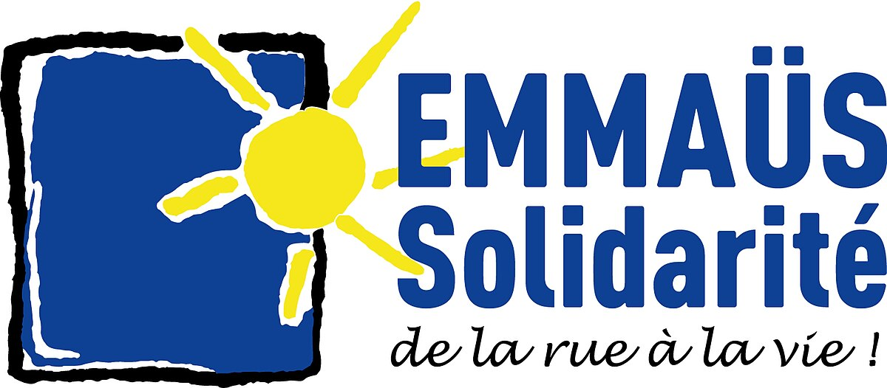

Envie de faire avancer le monde ?
Rejoignez Econocom
et faites partie de ce nouvel univers
informatique
Nos Top Projets



Envie de faire avancer le monde ?
Rejoignez Econocom
et faites partie de ce nouvel univers
informatique


